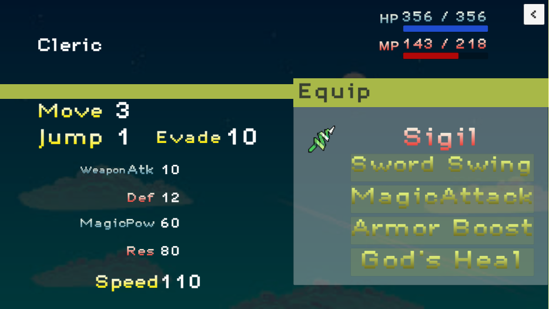
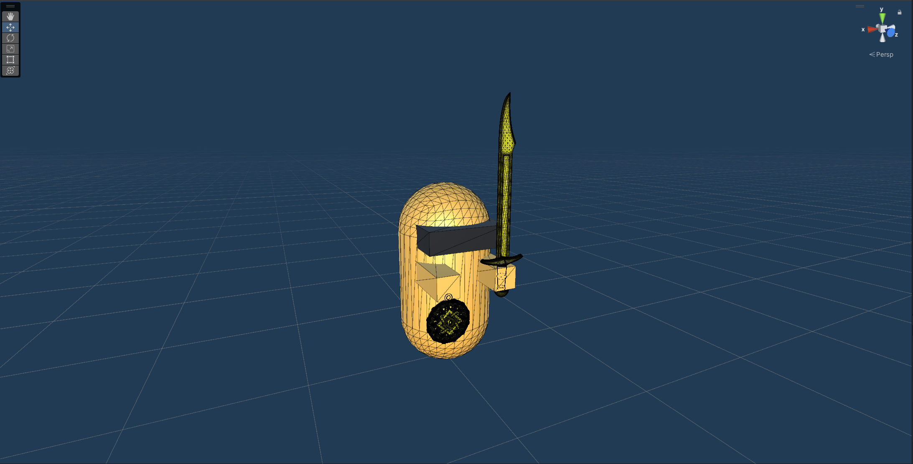
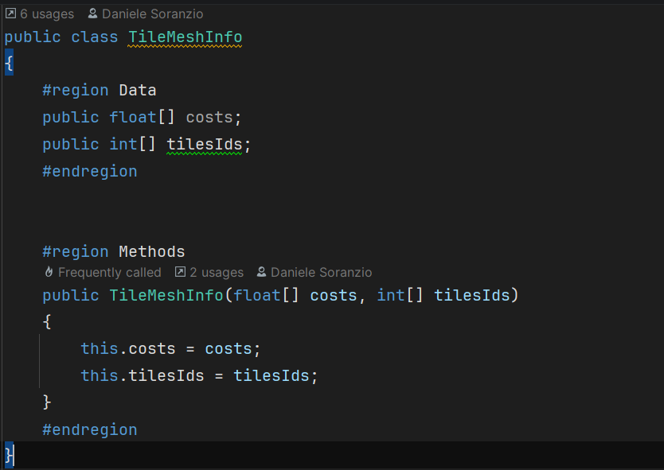
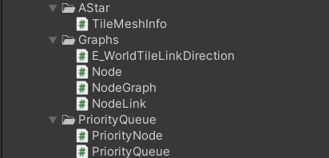

Final Fantasy Tactics Advanced.

// overview
Final Fantasy Tactics Advanced is a remake of a battle from the popular game from Nintendo and SquareSoft.
The main focus of the project was on the A* pathfinding algorithm with difference height, cost of movement and possible obstacles.
// technical_challenges
01
A* Pathfinding Algorithm — Creating a solid structure with nodes and links between them was a hard challenge give the small deadline.
02
Modular attacks and enemies — Creating different enemies with different data and classes was manageable by implementing a solid structure of scriptable objects.
03
AI behavior — Even if the Enemy AI wasn't the main focus of the project, it still was a crucial part of the game loop.
// gallery




// links